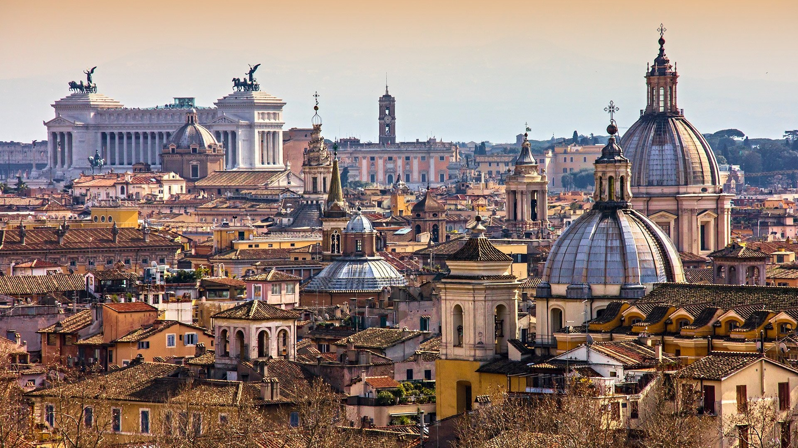
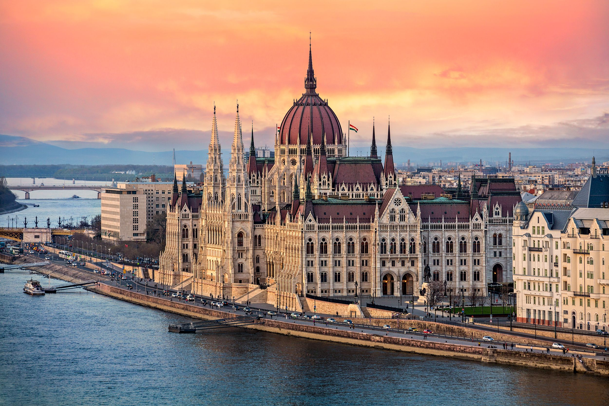
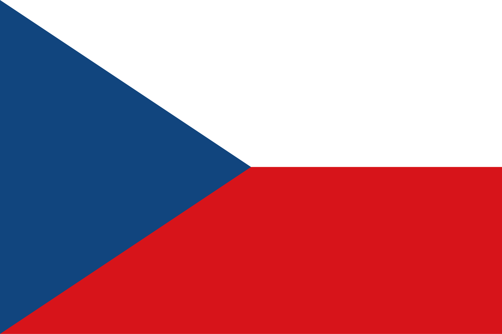
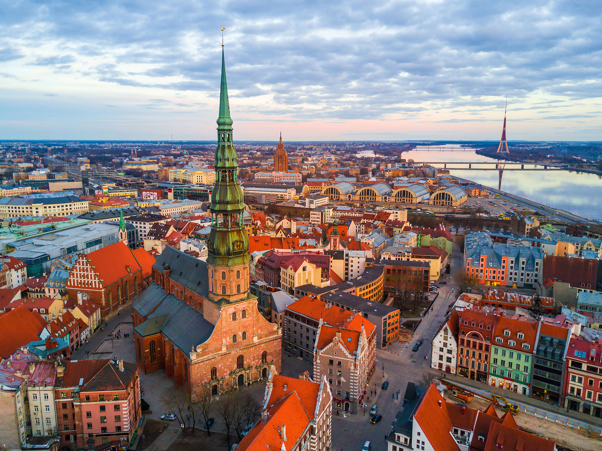
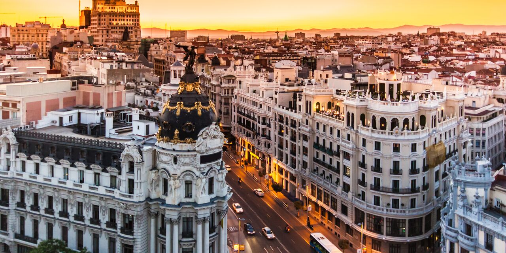
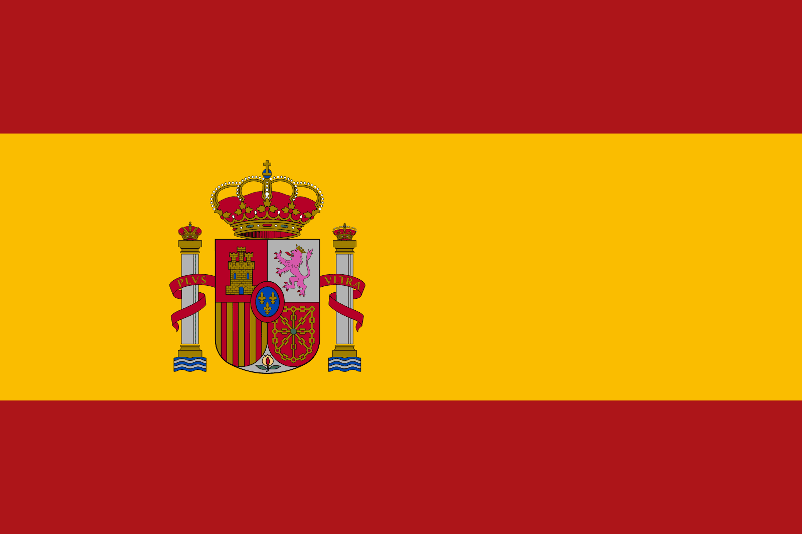

Top 5 Destinations
Rome

Rome, the capital of Italy, is known for its nearly 3,000 years
of globally influential art, architecture, and culture. Its
historic center is a UNESCO World Heritage Site, and it is home
to the Vatican City, the Pope's residence.
- Province/State: Lazio
- Country: Italy
- Population: ~2.8 million
- Latitude and Longitude: 41.9028° N, 12.4964° E
Return
Budapest

Budapest, the capital of Hungary, is known for its stunning architecture,
rich history, and vibrant culture. The city is divided by the Danube River,
with Buda on one side and Pest on the other.
- Province/State: Central Hungary
- Country: Hungary
- Population: ~1.75 million
- Latitude and Longitude: 47.4979° N, 19.0402° E
 Return
Return
Prague

Prague, the capital of the Czech Republic, is known for its beautiful architecture,
historic sites, and vibrant culture. The city is home to the famous Charles Bridge
and the stunning Prague Castle.
- Province/State: Prague
- Country: Czech Republic
- Population: ~1.3 million
- Latitude and Longitude: 50.0755° N, 14.4378° E

Return
Riga

Riga, the capital of Latvia, is known for its charming old town,
stunning Art Nouveau architecture, and vibrant cultural scene. The city
is located on the Baltic Sea and is a UNESCO World Heritage Site.
- Province/State: Riga
- Country: Latvia
- Population: ~632,614
- Latitude and Longitude: 56.9496° N, 24.1052° E
Return
Madrid

Madrid, the capital of Spain, is known for its rich cultural heritage,
stunning architecture, and vibrant nightlife. The city is home to the famous
Prado Museum and the Royal Palace of Madrid.
- Province/State: Community of Madrid
- Country: Spain
- Population: ~3.2 million
- Latitude and Longitude: 40.4168° N, 3.7038° W

Return